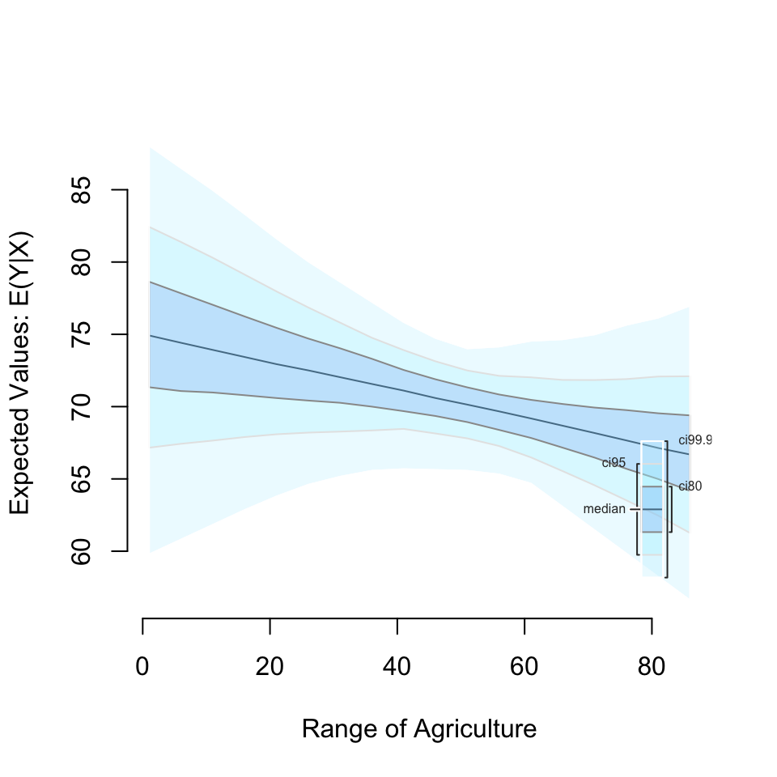
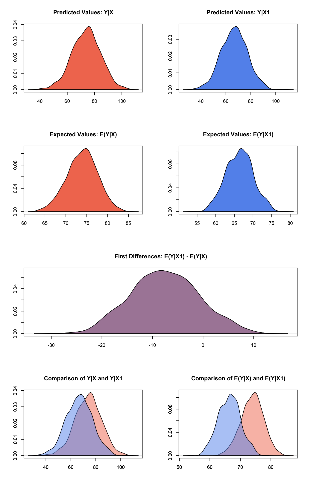
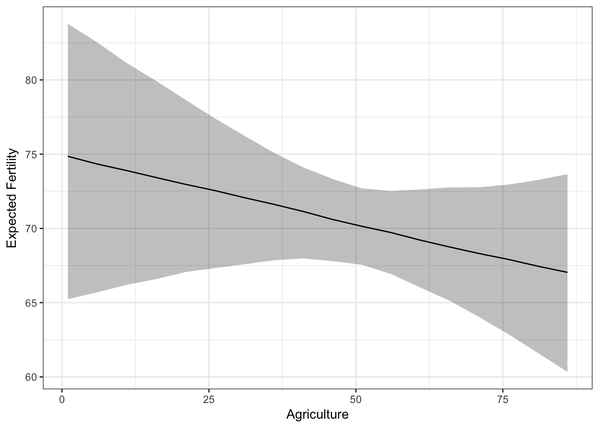

Built using Zelig version 5.0.16
Many researchers integrate tools from the “tidyverse” into their data workflows. The tidyverse includes a number of packages to read data into R–readr–, transform it for analysis– tibble, tidyr, purr, and dplyr, and visualise the results with ggplot2. All of these packages can be loaded in R by loading the tidyverse package:
library(tidyverse)Zelig can be easily slotted into this workflow for model estimation and identifying quantities of interest. Most Zelig estimation models require underlying data to be in the “tidy” format that the tidyverse creates. Zelig’s three step workflow can be organized very well using pipes (%>%) that the tidyverse advocates. Using pipes with Zelig will make your code more legible and computationally efficient.
“Tidy” data is defined as having three qualities (Wickham 2014, 4):
Each variable forms a column.
Each observation forms a row.
Each type of observational unit forms a table.
Data formatted in this way is ideal for most Zelig models.
This example shows one way to integrate the Tidyverse and Zelig into one workflow.
Imagine we used the Tidyverse to create a data set in tidy format that we want to analyse with Zelig:
## Fertility Agriculture Examination
## Courtelary 80.2 17.0 15
## Delemont 83.1 45.1 6
## Franches-Mnt 92.5 39.7 5
## Moutier 85.8 36.5 12
## Neuveville 76.9 43.5 17
## Porrentruy 76.1 35.3 9We could then analyse it with Zelig and plot quantities of interest using Tidyverse’s pipe operator. Note the use of data = .. This tells the pipe to enter the swiss data object as the value of zelig’s data argument:
library(Zelig)
library(tidyverse)
swiss %>%
zelig(Fertility ~ Agriculture + Examination, model = 'ls', data = .,
cite = FALSE) %>%
setx(Agriculture = seq(1, 90, by = 5)) %>%
sim() %>%
plot()
We could also find first differences by including setx1 in the workflow:
swiss %>%
zelig(Fertility ~ Agriculture + Examination, model = 'ls', data = .,
cite = FALSE) %>%
setx(Agriculture = 10) %>%
setx1(Agriculture = 90) %>%
sim() %>%
plot()
Note that piping does not work with Zelig 5’s reference class syntax.
Zelig’s in-house plots are built using base R plotting functionality. You may want to take the quantities of interest simulated by Zelig and create custom plots with other tools, such as ggplot2.
The function zelig_qi_to_df extracts quantities of interest simulated by sim and returns them in a data frame formatted to follow tidy data principles. This output could be easily plotted with ggplot2.
Using the example analysis from before:
sims.full <- swiss %>%
zelig(Fertility ~ Agriculture + Examination, model = 'ls', data = .,
cite = FALSE) %>%
setx(Agriculture = seq(1, 90, by = 5)) %>%
sim() %>%
zelig_qi_to_df()
head(sims.full)## setx_value Agriculture Examination expected_value predicted_value
## 1 x 1 16.48936 84.00574 79.82021
## 2 x 1 16.48936 73.08617 78.50654
## 3 x 1 16.48936 70.35042 75.76874
## 4 x 1 16.48936 80.27739 90.41597
## 5 x 1 16.48936 75.50518 73.32123
## 6 x 1 16.48936 74.67167 80.02266Each row contains information for an individual “observation”, i.e. a quantity of interest calculated from one draw of the model parameters from the multivariate normal distribution.
The first three columns of the object returned by zelig_qi_to_df in this case contain information that identifies the scenario that the quantity of interest is from. For example, the first row is from a scenario where Agriculture is fitted at 1 and Examination is fitted at the sample mean 16.4893617. The setx_value column identifies if the values were fitted by a setx call as x or x1–a contrasting scenario used to find first differences.
The final two columns contain the expected and predicted value of the quantity of interest, respectively.1
Typically when we plot simulated quantities of interest, we would be interested in showing the central interval of the simulated distribution. This involves finding the central interval for each simulation scenario for some range, e.g. the central 95% of simulations. Zelig now includes a helper function qi_slimmer that takes the output of zelig_qi_to_df and finds the desired central interval for each scenario. For example:
sims.slimmed <- qi_slimmer(sims.full)## Slimming Expected Values . . .head(sims.slimmed)## setx_value Agriculture Examination qi_ci_min qi_ci_median qi_ci_max
## 1 x 1 16.48936 65.75518 75.21336 84.37720
## 2 x 6 16.48936 66.20842 74.68020 82.84272
## 3 x 11 16.48936 66.44972 74.22790 81.54949
## 4 x 16 16.48936 66.82196 73.74735 80.31115
## 5 x 21 16.48936 67.26946 73.21621 78.95559
## 6 x 26 16.48936 67.52224 72.69393 77.76690Now we have one row for each scenario. This contains the columns qi_ci_min, qi_ci_median, and qi_ci_max for the central interval of the simulations from each scenario. By default qi_ci_min and qi_ci_max contain central interval bounds at the lower 2.5 and upper 97.5 percentiles, respectively. qi_ci_median contains the simulated distribution’s median. The interval can be changed with the ci argument. You can choose expected value (ev) or predicted value (pv) with the qi_ci_type argument.
Now we have everything to make a ggplot2 plot summarizing the simulated quantity of interest:
ggplot(sims.slimmed, aes(Agriculture, qi_ci_median)) +
geom_ribbon(aes(ymin = qi_ci_min, ymax = qi_ci_max), alpha = 0.3) +
geom_line() +
ylab('Expected Fertility') +
theme_bw()
We are also considering in the future whether to generate Zelig’s default plots with ggplot2. We’d love to hear your thoughts: GitHub , Google Groups , or Gitter Chat .
“Depending on the issue being studied, the expected or mean value of the dependent variable may be more interesting than a predicted value. The difference is subtle but important. A predicted value contains both fundamental and estimation uncertainty, whereas an expected value averages over the fundamental variability arising from sheer randomness in the world, leaving only the estimation uncertainty caused by not having an infinite number of observations. Thus, predicted values have a larger variance than expected values, even though the average should be nearly the same in both cases.” From King, Tomz, and Wittenberg (2000, 350)↩